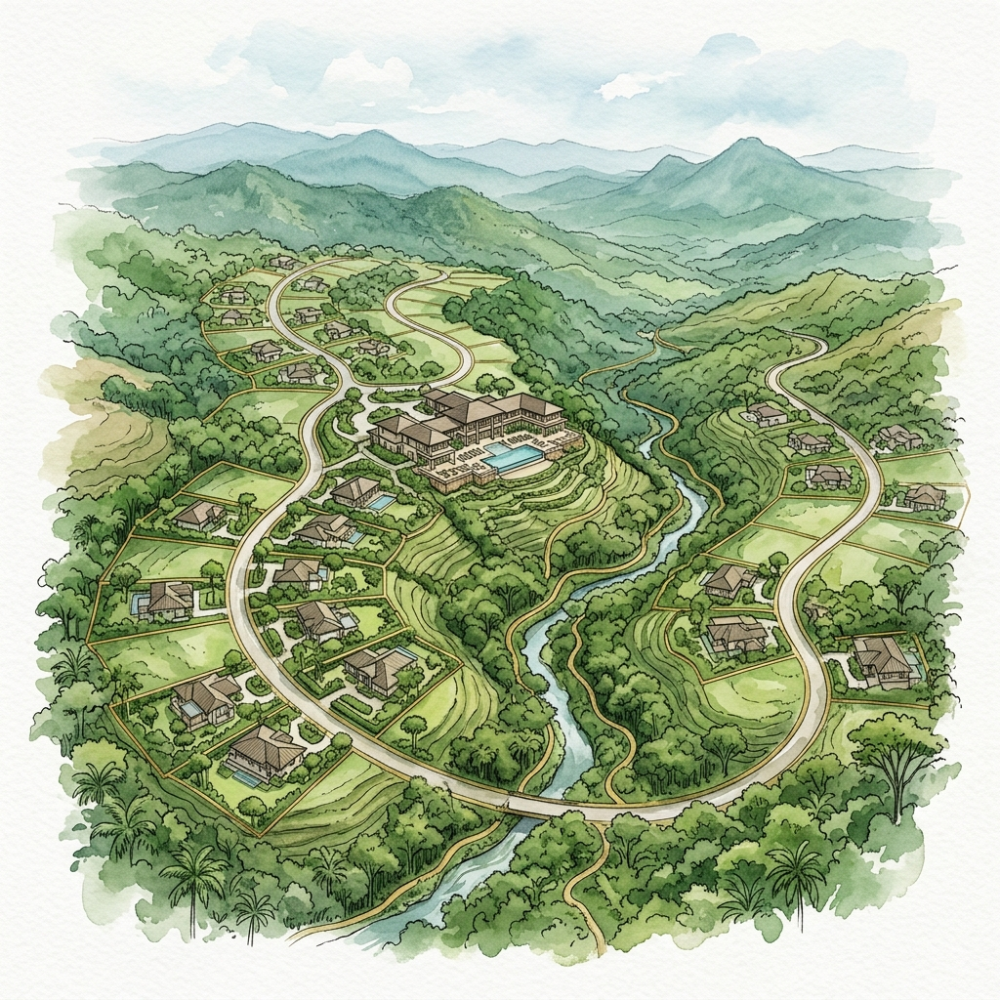

Visualizing the Sanctuary
Visualizando el Santuario
Design & Layout Concepts Conceptos de Diseño y Distribución

Phase 1 · Segregations (Click to enlarge)
Fase 1 · Segregaciones (Clic para ampliar)
Lot Layout Map Mapa de Distribución de Lotes
Approved segregation plans and official boundaries for the 22 residential lots of 1 hectare each. Planos de segregación aprobados y linderos oficiales para los 22 lotes residenciales de 1 hectárea cada uno.

Scenic · Ridges
Escénico · Crestas
Sanctuary Ridges View Vistas de las Crestas Residenciales
Panoramic views of the green valley and surrounding mountains at 1,000 meters elevation. Vistas panorámicas del valle verde y las montañas circundantes a 1,000 metros de altitud.

Architecture · Integration
Arquitectura · Integración
Eco-Home Concept Concepto de Hogar Ecológico
Architectural conceptual designs showing low-impact eco-luxury homes integrated into the native forest. Diseños conceptuales de arquitectura para casas de eco-lujo de bajo impacto integradas al bosque nativo.